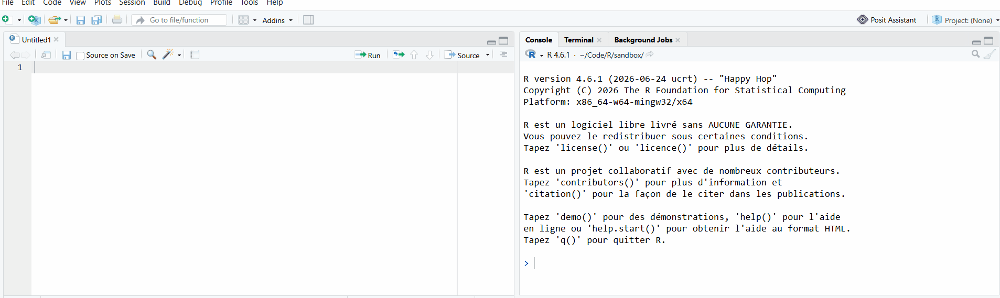

spicy brings polished, console-first data exploration to R for everyday analysis workflows.
What is spicy?
spicy is an R package for the first phase of data analysis: inspecting variables, checking distributions, exploring associations, and producing publication-ready tables. It helps you:
-
Inspect variables with
varlist()— names, labels, values, classes, missings. Similar to SPSS “Variable View” or Stata “Variables Manager”. -
Explore distributions with
freq()and associations withcross_tab(). -
Measure associations with
cramer_v(),phi(),gamma_gk(),kendall_tau_b(),somers_d(), and more — all with confidence intervals and p-values. -
Build APA tables with
table_apa()— export to gt, tinytable, flextable, Excel, Word, or clipboard. -
Compute row-wise summaries with
mean_n(),sum_n(), andcount_n(). -
Generate codebooks with
code_book()— interactive HTML with search, sort, and export. -
Extract labels from column headers with
label_from_names()— useful for LimeSurvey CSV exports.
Works with labelled, factor, ordered, Date, POSIXct, and other common variable types. See vignette("spicy") for a full tour.
Installation
Install the stable version from CRAN:
install.packages("spicy")Or from r-universe:
install.packages("spicy", repos = c("https://amaltawfik.r-universe.dev", "https://cloud.r-project.org"))Or the development version from GitHub:
# install.packages("pak")
pak::pak("amaltawfik/spicy")Quick tour
Inspect variables

varlist(sochealth, tbl = TRUE)
#> # A tibble: 20 × 7
#> Variable Label Values Class N_distinct N_valid NAs
#> <chr> <chr> <chr> <chr> <int> <int> <int>
#> 1 sex Sex Femal… fact… 2 1200 0
#> 2 age Age (years) 25, 2… nume… 51 1200 0
#> 3 age_group Age group 25-34… orde… 4 1200 0
#> 4 education Highest education … Lower… orde… 3 1200 0
#> 5 social_class Subjective social … Lower… orde… 5 1200 0
#> 6 region Region of residence Centr… fact… 6 1200 0
#> 7 employment_status Employment status Emplo… fact… 4 1200 0
#> 8 income_group Household income g… Low, … orde… 4 1182 18
#> 9 income Monthly household … 1000,… nume… 1053 1200 0
#> 10 smoking Current smoker No, Y… fact… 2 1175 25
#> 11 physical_activity Regular physical a… No, Y… fact… 2 1200 0
#> 12 dentist_12m Dentist visit in l… No, Y… fact… 2 1200 0
#> 13 self_rated_health Self-rated health Poor,… orde… 4 1180 20
#> 14 wellbeing_score WHO-5 wellbeing in… 18.7,… nume… 517 1200 0
#> 15 bmi Body mass index 16, 1… nume… 181 1188 12
#> 16 bmi_category BMI category Norma… orde… 3 1188 12
#> 17 institutional_trust Trust in instituti… Very … orde… 4 1200 0
#> 18 political_position Political position… 0, 1,… nume… 11 1185 15
#> 19 response_date Survey response da… 2024-… POSI… 1200 1200 0
#> 20 weight Survey design weig… 0.323… nume… 810 1200 0Frequency tables and cross-tabulations
freq(sochealth, income_group)
#> Frequency table: income_group
#>
#> Category │ Values Freq. Percent Valid Percent
#> ──────────┼─────────────────────────────────────────────
#> Valid │ Low 247 20.6 20.9
#> │ Lower middle 388 32.3 32.8
#> │ Upper middle 328 27.3 27.7
#> │ High 219 18.2 18.5
#> Missing │ NA 18 1.5
#> ──────────┼─────────────────────────────────────────────
#> Total │ 1200 100.0 100.0
#>
#> Label: Household income group
#> Class: ordered, factor
#> Data: sochealth
cross_tab(sochealth, smoking, education, percent = "col")
#> Crosstable: smoking x education (Column %)
#>
#> Values │ Lower secondary Upper secondary Tertiary │ Total
#> ─────────────┼───────────────────────────────────────────────────────────┼────────────
#> No │ 69.6 78.7 84.9 │ 78.8
#> Yes │ 30.4 21.3 15.1 │ 21.2
#> ─────────────┼───────────────────────────────────────────────────────────┼────────────
#> Total │ 100.0 100.0 100.0 │ 100.0
#> N │ 257 527 391 │ 1175
#>
#> Chi-2(2) = 21.6, p < 0.001
#> Cramer's V = 0.14Association measures
tbl <- xtabs(~ self_rated_health + education, data = sochealth)
# Quick scalar estimate
cramer_v(tbl)
#> [1] 0.1761697
# Detailed result with CI and p-value
cramer_v(tbl, detail = TRUE)
#> estimate ci_lower ci_upper p_value
#> 1.761697e-01 1.203119e-01 2.309156e-01 8.817446e-14See vignette("association-measures") for a guide on choosing the right measure.
APA tables
table_apa(
sochealth,
row_vars = c("smoking", "physical_activity"),
group_var = "education",
labels = c("Current smoker", "Physical activity"),
output = "flextable"
)See vignette("table-apa") for all output formats, weights, CI, and export options.
Label extraction
# LimeSurvey-style headers: "code. label"
df <- tibble::tibble(
"age. Age of respondent" = c(25, 30),
"score. Total score" = c(12, 14)
)
out <- label_from_names(df)
labelled::var_label(out)
#> $age
#> [1] "Age of respondent"
#>
#> $score
#> [1] "Total score"Citation
If you use spicy in a publication or teaching material:
- Use
citation("spicy")for the BibTeX entry. - The archival DOI is: https://doi.org/10.5281/zenodo.15397865.
- Source citation file: https://github.com/amaltawfik/spicy/blob/main/inst/CITATION
License
MIT. See LICENSE for details.